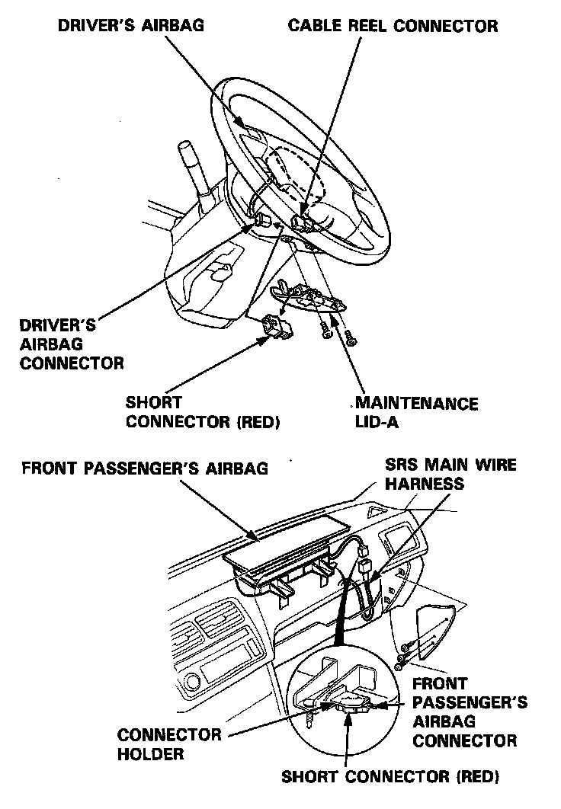
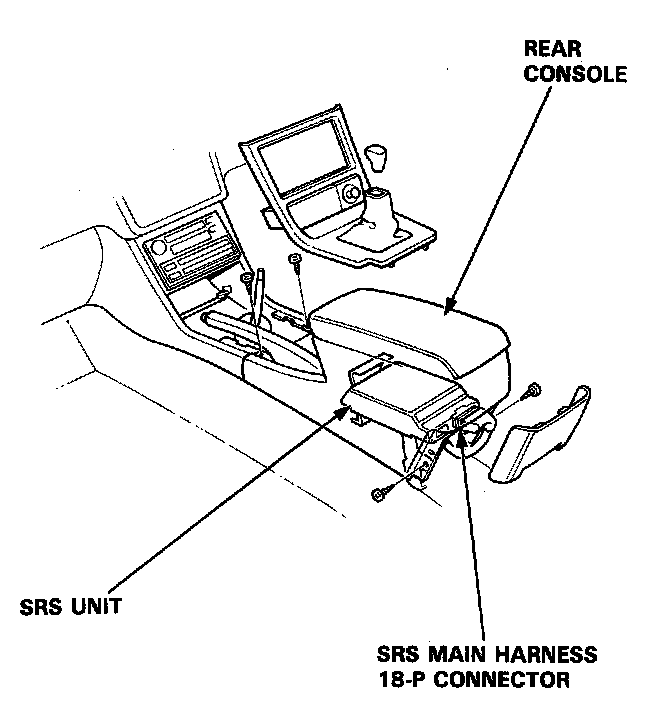
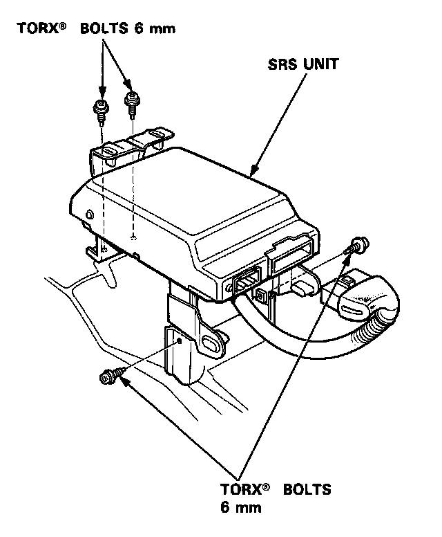
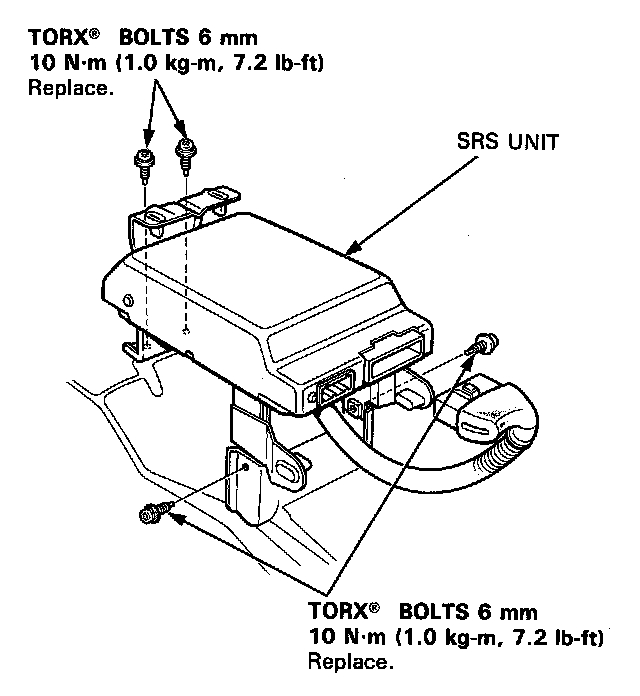
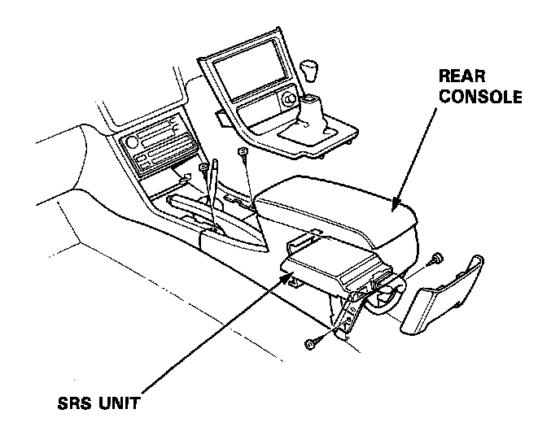

Air Bag Control Module: Service and Repair
SRS Unit Removal and Installation
Removal:
CAUTION:
- Always keep the short connector on the airbag connector when the harness is disconnected.
- Do not damage the pins of connectors.
- No serviceable parts inside.
- Do not disassemble or tamper.
- Store in a clean, dry area.
- Do not use any SRS unit which has been subjected to water damage or shows signs of being dropped or improperly handled, such as dents, cracks or deformation.
NOTE: Before you disconnect the battery, be sure you get the customer's anti-theft radio code number (L, LS model).
1. Disconnect the battery negative cable, then disconnect the positive cable.
2. Install the short connectors on both airbags - refer to "Indicator Light Troubleshooting", caution notice.

3. Remove the rear console, then disconnect the SRS main harness 18-P connector from the SRS unit.

4. Remove the SRS unit 4 mounting bolts, then remove the SRS unit.

Installation:
CAUTION: Be sure to install the SRS wiring so that it is not pinched or interfering with other car parts.
1. Install the SRS unit.

2. Connect the SRS main harness 18-P connector to the SRS unit.
NOTE: To reinstall a connector, push it into position until it clicks.
3. Install the rear console.
4. Disconnect the short connector from the driver's airbag connector, then connect the cable reel and driver's airbag connector.
NOTE: Attach the short connector to lid A, then install the lid.
SRS Unit Location:

5. Disconnect the short connector from the front passenger's airbag connector, then connect the SRS main harness 3-P connector and front passenger's airbag connector.
6. Attach the short connector to the connector holder. Install the glove box.
7. Connect the battery positive cable, then connect the negative cable.
8. After installing the SRS unit assembly, confirm proper system operation.
- Turn the ignition to II: the instrument panel SRS indicator light should go on for about 6 seconds and then go off.
- Enter the customer's code number to restore radio operation [L, LS model].